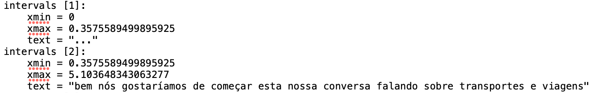
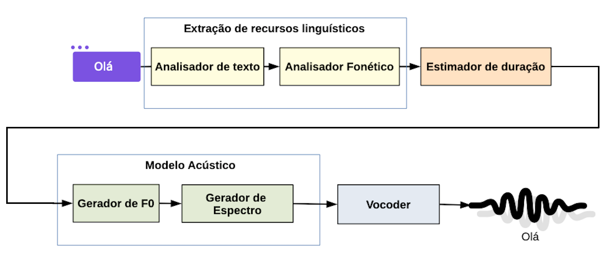
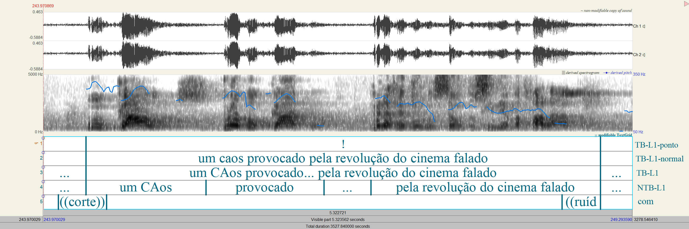
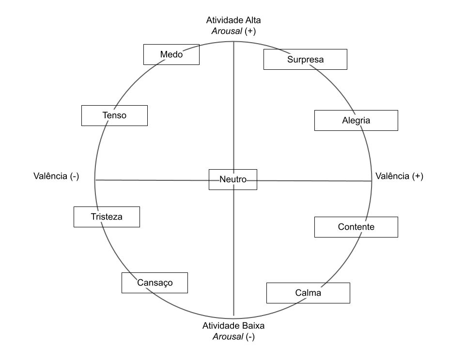
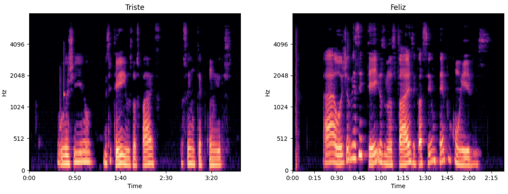
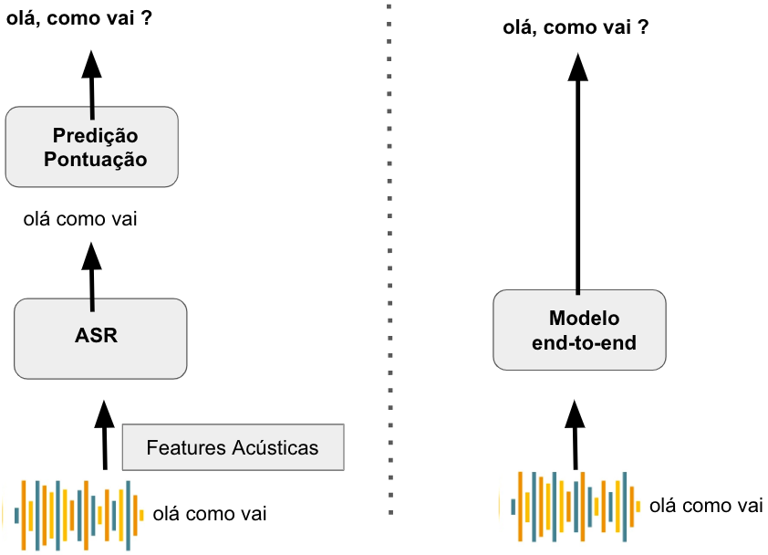

3 Recursos para o processamento de fala
3.1 Introdução
Até a metade de 2020, o português brasileiro (PB) possuía apenas algumas dezenas de horas de dados de fala públicos ou abertos para pesquisas acadêmicas, disponíveis para treinar modelos para os sistemas mais comuns, que são os reconhecedores automáticos de fala (em inglês, Automatic Speech Recognition ou ASR) e os sintetizadores de fala (em inglês, Text-to-Speech Synthesis ou TTS). Havia um grande contraste com a língua inglesa, cujos recursos eram maiores tanto em número de horas quanto em número de locutores e, assim, mais adequados à aplicação de métodos de aprendizado profundo de máquina, chamados de deep learning, em inglês.
Para o treinamento de modelos de reconhecimento de fala, havia aproximadamente 60 horas, divididas em quatro pequenos conjuntos de dados de fala lida (em inglês, read speech), isto é, uma fala preparada para ser lida, em contraste com a fala espontânea: (1) o Common Voice Corpus versão 5.1 (da Mozilla)1 (2) o dataset Sid, (3) o VoxForge e (4) o LapsBM 1.42. Para o treinamento de modelos de síntese de fala, havia um conjunto de dados de um único locutor com 10 horas e 28 minutos de fala, chamado TTS-Portuguese Corpus3.
A fala espontânea possui fenômenos que tornam o seu reconhecimento mais complexo do que o da fala lida, como as pausas preenchidas e as disfluências de edição. Exemplos de projetos que tratam da fala lida são o Librivox4, que distribui os livros de domínio público em formato de áudio. Estes áudios têm sido usados em vários projetos para criação de recursos para processamento de fala em inglês como o LibriSpeech ASR Corpus5 e o LibriTTS6, ambos alocados no repositório Open Speech and Language Resources. O LibriSpeech é um grande corpus de fala lida em inglês, com 1.000 horas, destinado a pesquisas de reconhecimento automático de fala. O LibriTTS é um corpus multilocutor derivado do LibriSpeech para pesquisas em síntese de fala, com 585 horas.
Nesse cenário de escassez de dados públicos de fala em PB para treinamento de sistemas de processamento de fala, foi concebido, em agosto de 2020, o projeto TaRSila7 do Center for Artificial Intelligence8 da Universidade de São Paulo, financiado pela IBM e FAPESP. O projeto TaRSila visa a aumentar os conjuntos de dados de fala em PB tanto para treinamento de sistemas como também para pesquisas linguísticas nas seguintes tarefas do processamento de fala:
- reconhecimento automático de fala espontânea, que transcreve automaticamente a fala espontânea, por exemplo, diálogos, entrevistas e conversas informais;
- síntese de fala multilocutor expressiva, que gera vozes de diferentes locutores/falantes de maneira próxima a um falante humano, a partir de um texto;
- clonagem de voz. A clonagem de voz engloba duas grandes tarefas do processamento de fala: a síntese de fala e a conversão de voz. O objetivo da clonagem é copiar a voz de um locutor e gerar novas amostras de áudio utilizando-se de características da voz do locutor. Existem diferentes métodos de clonagem, sendo os mais interessantes os de síntese de fala multilocutor zero-shot e os métodos de conversão de voz zero-shot que conseguem clonar a voz de um locutor utilizando apenas alguns segundos de fala;
- modelagem de tópicos a partir das transcrições dos áudios, que é útil para organizar, resumir e visualizar o conteúdo de vídeos em tópicos similares;
- predição da pontuação de segmentos de fala e predicação da capitalização, isto é, quais palavras devem ser escritas com a primeira letra maiúscula. Essas tarefas são importantes para facilitar o entendimento humano do texto de uma transcrição automática. Também são importantes para o encadeamento de sistemas, quando o ASR é usado antes de um sistema de tradução automática ou de um sistema de reconhecimento de entidades nomeadas (em inglês, Name Entity Recognition ou NER). Exemplos de entidades nomeadas são nomes de pessoas, de lugares, e de organizações, entre outras;
- segmentação prosódica da fala espontânea em unidades prosódicas terminais e não terminais, que transmitem a ideia de conclusão do enunciado e a ideia de não conclusão, respectivamente. Ajuda a analisar o conteúdo de uma sequência falada, dados os vários sentidos possíveis, e facilita a criação de conjuntos de dados para treinamento de ASRs para fala espontânea, por indicar o limite de uma sequência de fala e, consequentemente, auxiliar na predição da pontuação (tarefa citada acima);
- reconhecimento de emoções a partir da fala (em inglês, Speech Emotion Recognition ou SER). Reconhece o estado emocional de um locutor a partir de sua fala e é útil para muitas aplicações, como o desenvolvimento de ferramentas de diagnóstico para terapeutas, assistentes de voz e ferramentas para análise de comunicações em call centers.
Além das sete tarefas acima em estudo no TaRSila, o livro sobre Processamento de Fala9 (Bäckström et al., 2022) apresenta outras tarefas típicas, como o reconhecimento e verificação de locutor, a restauração de fala e a diarização:
- reconhecimento de locutor e verificação de locutor, que se referem, respectivamente, à identificação do locutor (quem está falando?) e à verificação se o locutor é quem afirma ser;
- a restauração (ou aprimoramento) da fala refere-se à melhoria de uma gravação de um sinal de fala para, por exemplo, remover o ruído de fundo ou o efeito da acústica do ambiente;
- a diarização da fala é o processo de segmentar uma conversa de vários falantes em segmentos contínuos de um único falante.
O livro coloca o reconhecimento de emoções em áudios (citada acima) no grupo das tarefas de análise paralinguística, dado que extrai do sinal de áudio informação não linguística (diferente da pontuação, por exemplo) e não relacionada à identidade de um locutor, como fazem as tarefas de reconhecimento e verificação de locutor.
Neste capítulo, apresentamos os recursos de fala criados nos três primeiros anos do projeto TaRSila para ilustrar várias das tarefas da área de processamento de fala, acima elencadas, que são definidas e exemplificadas em cada seção. Nesse percurso, fazemos um contraste com a língua inglesa que possui mais recursos para cada tarefa, citando os recursos disponibilizados na literatura tanto para o inglês como para o português.
Os vários recursos desenvolvidos no TaRSila têm o prefixo CORAA (CORpus de Áudios Anotados), que é um grande corpus multipropósito do português brasileiro no qual os arquivos de áudios estão alinhados com transcrições que foram (ou estão sendo) manualmente validadas para cada tarefa estudada no TaRSila.
O alinhamento de um trecho de áudio com a transcrição correspondente indica o tempo de início e o tempo final do trecho (também chamado de minutagem do áudio) (veja a Figura 3.1), formando pares usados no aprendizado supervisionado de um modelo de reconhecimento de fala. O reconhecedor Whisper10 da OpenAI, por exemplo, foi treinado dessa forma. O uso de pares áudio-transcrição para treinamento de reconhecedores de fala não é a única abordagem para a tarefa, que também pode ser feita por aprendizado não supervisionado, como é o caso, por exemplo, do wav2vec-U11. Essa é uma abordagem na qual o aprendizado dispensa a necessidade de transcrições, e ocorre apenas por meio de áudio. Em todo caso, para a avaliação do desempenho de um reconhecedor, é importante que haja os pares áudio-transcrição.

Começamos apresentando, na Seção Recursos para síntese de fala (corpora para TTS), o TTS-Portuguese Corpus, corpus para treinamento de modelos de síntese de fala, criado e disponibilizado no início de 2020 com a fala de um único locutor. Esse corpus permitiu avançar pesquisas sobre síntese de fala, conversão de voz e uma abordagem de aumento de dados para treinar modelos de reconhecedores de fala em cenários de baixos recursos de dados. Na Seção Recursos para segmentação prosódica (com enfoque em anotação prosódica), apresentamos o corpus CORAA NURC-SP (foco na versão mínima), que contém 334 horas de fala espontânea e fala preparada de falantes de São Paulo, capital, divididas em uma parte com áudios e transcrições manuais não alinhadas originalmente (47 inquéritos) e outra parte de áudios somente (328 inquéritos). Na Seção Recursos para reconhecimento automático de fala (corpora para ASR), apresentamos os corpora CORAA ASR, CORAA Certas Palavras, CORAA MuPe e CORAA NURC-SP Audio Corpus (com enfoque em ASR), uma coleção de corpora com enfoque em fala espontânea que juntos totalizam aproximadamente 963 horas. Na Seção Recursos para reconhecimento de emoções (recursos para reconhecimento de emoções), apresentamos o CORAA SER versão 1.0, composto por aproximadamente 50 minutos de segmentos de áudio rotulados em três classes: neutro, não neutro feminino e não neutro masculino, sendo que a classe neutra representa segmentos de áudio sem estado emocional bem definido e as classes não neutras representam segmentos associados a um dos estados emocionais primários da fala do locutor. Finalmente, na Seção Recursos para predição de pontuação no cenário de ASR (predição e pontuação), revisitamos o corpus do CORAA MuPe, com 300 horas de áudios de histórias de vida e transcrições com pontuação, que foi cedido ao TaRSila em um convênio entre o Instituto de Ciências Matemáticas e de Computação da Universidade de São Paulo (ICMC-USP), Universidade Federal de Goiás (UFG) e Museu da Pessoa, usado para a avaliação da tarefa de predição de pontuação do ASR Whisper da OpenAI. Na Seção Considerações finais finalizamos o capítulo com a revisão dos tópicos cobertos aqui.
3.2 Recursos para síntese de fala
Os sistemas de síntese de fala receberam muita atenção a partir de 2017 devido ao grande avanço proporcionado pela aplicação do deep learning (Goodfellow et al., 2016) nessa área, que permitiu a popularização e aprimoramento de assistentes virtuais, como Apple Siri (Gruber, 2009), Amazon Alexa (Purington et al., 2017) e Google Home (Dempsey, 2017).
Os sistemas tradicionais de síntese de fala foram muito utilizados até 2010. Entretanto, a partir dessa data, a síntese de fala baseada em redes neurais tornou-se gradualmente o método dominante e alcançou uma qualidade de áudio superior aos sistemas tradicionais (Tan et al., 2021). De acordo com Tachibana et al. (2017), os sistemas tradicionais de síntese de fala não são fáceis de se desenvolver, devido ao fato de serem compostos por muitos módulos específicos, tais como um analisador de texto, um analisador fonético, um estimador de duração, um modelo acústico e um vocoder. A Figura 3.2 apresenta um diagrama com os principais componentes de um sistema de síntese de fala tradicional (Casanova et al., 2021). Vários trabalhos na literatura exploraram essa abordagem clássica (Braude et al., 2013; Charpentier; Stella, 1986; Klatt, 1980; Siddhi et al., 2017; Teixeira et al., 2003; Tokuda et al., 2000; Wang; Georgila, 2011; Ze et al., 2013).

Fonte: Adaptado de (Casanova et al., 2021, fig. 14.1, p. 184)
O advento do deep learning permitiu a integração dos módulos específicos dos sistemas de síntese de fala tradicionais em um único modelo. Apesar dos modelos baseados em deep learning serem às vezes criticados devido à dificuldade de interpretá-los, vários sistemas de síntese de fala baseado em deep learning (Kim et al., 2020, 2021; Kyle et al., 2017; Ping et al., 2017; Shen et al., 2018; Tachibana et al., 2017; Valle et al., 2020; Wang et al., 2023; Wang et al., 2017) demonstraram a capacidade de sintetizar fala com uma qualidade muito promissora, superior, inclusive, à dos sistemas tradicionais.
Modelos baseados em deep learning requerem uma quantidade maior de dados para treinamento, portanto, idiomas com poucos recursos disponíveis ficam prejudicados. Por esse motivo, a maioria dos modelos de síntese de fala atuais são projetados para o inglês (Kim et al., 2020, 2021; Ping et al., 2017; Shen et al., 2018; Valle et al., 2020; Wang et al., 2023), que é um idioma com muitos recursos disponíveis publicamente.
Para o inglês existem vários corpora que podem ser utilizados para treinar modelos de síntese de fala baseados em deep learning, por exemplo, os corpora VCTK (Veaux et al., 2017), LJ Speech (Ito, 2017), LibriTTS (Zen et al., 2019) e LibriTTS-R (Koizumi et al., 2023a).
O corpus VCTK (Veaux et al., 2017) é composto por 44 horas de fala de 108 locutores, sendo 61 do sexo feminino e 47 do sexo masculino. Além disso, o corpus inclui amostras de 11 variedades linguísticas do inglês, sendo elas: britânico, americano, canadense, neozelandês, sul-africano, australiano, escocês, norte-irlandês, irlandês, indiano e galês. A taxa de amostragem dos áudios presentes nesse corpus é de 48 kHz. O corpus LJ Speech (Ito, 2017) foi derivado de audiolivros e tem aproximadamente 24 horas de fala de uma locutora profissional em uma taxa amostragem de 24 kHz. LJ Speech é um dos corpora abertos mais populares para síntese de fala de um único locutor. O corpus LibriTTS (Zen et al., 2019) também foi derivado de audiolivros e possui 585 horas de fala de 2456 locutores, sendo 1185 do sexo feminino e 1271 do sexo masculino. A taxa de amostragem dos áudios presentes nesse corpus é de 24 kHz. Por outro lado, o corpus LibriTTS-R (Koizumi et al., 2023a) foi criado com a aplicação do modelo de restauração de fala (em inglês, speech restoration) Miipher (Koizumi et al., 2023b) no dataset LibriTTS. As amostras do LibriTTS-R são idênticas às do LibriTTS, com apenas a qualidade de som melhorada. Os resultados dos experimentos mostraram que os modelos de síntese de fala treinados com o LibriTTS-R apresentaram qualidade significativamente melhor em comparação com os modelos treinados no LibriTTS.
Para a língua portuguesa, até meados em 2019, não havia nenhum corpus disponível publicamente com quantidade de horas e qualidade de áudio suficientes para treinar modelos de síntese de fala baseados em deep learning. Embora um corpus para síntese de fala em português europeu tenha sido disponibilizado em 2001, pelo fato de ele ter duração de aproximadamente 100 minutos apenas (Teixeira et al., 2001), não é possível utilizá-lo no treinamento de modelos baseados em deep learning.
Para suprir essa carência de dados para síntese de fala no português brasileiro, em 2019, a coleta do corpus TTS-Portuguese Corpus (Casanova, 2019; Casanova et al., 2022, 2022) foi iniciada (Casanova, 2019). Posteriormente, em 2020, o corpus foi tornado público (Casanova et al., 2022) e os detalhes de sua compilação foram publicados em um artigo (Casanova et al., 2022).
Para a construção do TTS-Portuguese Corpus, foram utilizados textos de domínio público. Inicialmente, buscando alcançar um vocabulário amplo, extraíram-se todos os artigos das seções de destaques da Wikipédia (da época em que foi compilado) para todas as áreas do conhecimento. Após essa extração, os artigos foram segmentados em sentenças (considerando-se a pontuação textual). Durante as gravações, o locutor recebeu sentenças desse conjunto, que foram escolhidas de forma aleatória. Além disso, foram utilizados os 20 conjuntos de sentenças foneticamente balanceadas, cada conjunto contendo 10 sentenças, propostas por Seara (1994). Por fim, para aumentar o número de perguntas e introduzir um discurso mais expressivo, foram ainda utilizadas frases do Chatterbot-corpus12, um corpus criado originalmente para a construção de chatbots. Desse modo, o TTS-Portuguese Corpus possui um vocabulário amplo com palavras de diversas áreas. Além disso, também possui uma representação de fala expressiva com o uso de perguntas e respostas de um conjunto de dados de chatbot.
A gravação do TTS-Portuguese Corpus foi realizada por um locutor masculino, nativo do português brasileiro, não profissional, em ambiente silencioso, mas sem isolamento acústico devido às dificuldades de acesso a estúdio de gravação. Todos os áudios foram gravados com frequência de amostragem de 48 kHz e resolução de 32 bits. No corpus, cada arquivo de áudio possui sua respectiva transcrição textual (a transcrição fonética não foi fornecida). O TTS-Portuguese Corpus consiste em um total de 71358 palavras faladas, 13311 palavras únicas, resultando em 3632 arquivos de áudio e totalizando 10 horas e 28 minutos de fala. Os arquivos de áudio variam em duração de 0.67 a 50.08 segundos (Casanova et al., 2022).
Em paralelo com o TTS-Portuguese Corpus, foram lançados dois conjuntos de dados para reconhecimento automático de fala do português, com boa qualidade. O primeiro, o CETUC (Alencar; Alcaim, 2008), disponibilizado publicamente por Quintanilha et al. (2020), tem aproximadamente 145 horas de fala de 100 locutores. Nesse corpus, cada locutor pronunciou mil sentenças foneticamente balanceadas extraídas de textos jornalísticos; em média, 1,45 horas gravadas por locutor. Já o segundo, o corpus Multilingual LibriSpeech (MLS) (Pratap et al., 2020), é derivado dos audiolivros LibriVox e abrange 8 idiomas, incluindo o português. Para o português, os autores disponibilizaram aproximadamente 130 horas de fala provenientes de 54 locutores, uma média de 2.40 horas de fala por locutor. Embora a qualidade de ambos os corpora seja boa, os dois foram disponibilizados com uma taxa de amostragem de 16 kHz e não possuem pontuação em seus textos, dificultando a aplicação desses corpora para síntese de fala. Além disso, a quantidade de fala de cada locutor nos dois corpora é baixa, o que torna difícil criar um conjunto de dados com um vocabulário grande o suficiente para síntese de fala de um único locutor.
Além disso, mais recentemente, o corpus CML-TTS (Oliveira et al., 2023) foi proposto. O CML-TTS é baseado no corpus Multilingual LibriSpeech (MLS) e foi adaptado para treinamento de modelos de síntese de fala. O CML-TTS é composto por audiolivros em sete idiomas: holandês, francês, alemão, italiano, português, polonês e espanhol. Os autores recriaram o corpus MLS mantendo a pontuação e os áudios com uma taxa de amostragem de 24 kHz. Amostras que não atendiam às especificações descritas anteriormente foram descartadas. Para o português, após a filtragem, os autores obtiveram aproximadamente 69 horas de fala, provenientes de 31 homens e 17 mulheres.
A Tabela 3.1 apresenta as estatísticas dos recursos disponíveis para síntese de fala do inglês e do português.
| Corpora | Idioma | Duração | Falantes | Disponibilizado |
|---|---|---|---|---|
| VCTK | inglês | 44 horas | 108 | 2017 |
| LJ Speech | inglês | 24 horas | 1 | 2017 |
| LibriTTS | inglês | 585 horas | 2456 | 2019 |
| LibriTTS-R | inglês | 585 horas | 2456 | 2023 |
| TTS-Portuguese Corpus | português | 10.4 horas | 1 | 2019 |
| CETUC | português | 145 horas | 100 | 2020 |
| MLS | português | 130 horas | 54 | 2020 |
| CML-TTS | português | 69 horas | 48 | 2023 |
3.3 Recursos para segmentação prosódica
Existem vários estudos na literatura de processamento de fala com foco na detecção de fronteiras prosódicas nas línguas naturais (Ananthakrishnan; Narayanan, 2008; Huang et al., 2008; Jeon; Liu, 2009; e.g. Wightman; Ostendorf, 1991). Para o inglês, entre os recursos frequentemente utilizados em aplicações que consideram fronteiras prosódicas, podemos citar o Santa Barbara Corpus of Spoken American English (Du Bois et al., 2000--2005) e o Boston University Radio Speech Corpus (Ostendorf et al., 1995). O primeiro contém \(\approx\)20 horas de fala espontânea de gêneros variados, transcritas e segmentadas manualmente em unidades entoacionais final e não final (Du Bois et al., 1992). Já o segundo contém 10 horas de notícias de rádio, das quais 3,5 horas estão prosodicamente anotadas de acordo com o sistema ToBI (Beckman et al., 2005).
Para o português brasileiro, trabalhos desenvolvidos no âmbito do projeto C-ORAL–Brasil avançam os estudos para a detecção automática de fronteiras prosódicas na fala espontânea a partir de parâmetros fonético-acústicos e fronteiras identificadas perceptualmente por anotadores treinados (Raso et al., 2020; Teixeira et al., 2018; Teixeira, 2022; Teixeira; Mittman, 2018). Os estudos utilizam excertos de fala monológica masculina (8–24 minutos de áudio e 1339–3697 palavras), provenientes dos corpora anotados C-ORAL–Brasil I e II (Mello et al., no prelo; Raso; Mello, 2012a). No âmbito do projeto TaRSila, o CORAA NURC-SP, que é preparado tanto para viabilizar estudos linguísticos quanto o processamento computacional, possui pelo menos 40 horas prosodicamente anotadas. O corpus é dividido em três subcorpus, incluindo: (a) CORAA NURC-SP Audio Corpus, focado em ASR; (b) CORAA NURC-SP Mínimo, voltado para estudos prosódicos; e (c) CORAA NURC-SP CATNA, áudios com transcrição não alinhada. Mais detalhes podem ser encontrados no página oficial do projeto13.
O CORAA NURC-SP toma como base dados provenientes do projeto acadêmico NURC–Norma Urbana Linguística Culta, que foi iniciado em 1969 com o objetivo de documentar e estudar a língua portuguesa falada por pessoas com ensino superior completo, denominadas ‘cultas’, de cinco capitais brasileiras: Recife, Salvador, Rio de Janeiro, São Paulo e Porto Alegre. O projeto resultou num grande corpus (aprox. 1.570 horas, 2.356 falantes) reunido ao longo dos anos 1970 e 1980 (Castilho, 1990).
Como em todas as capitais, o NURC-São Paulo (NURC-SP)14 reúne mais de 300 horas de gravação, apresentando falantes com nível superior; nascidos e criados na cidade; filhos de falantes nativos de português; igualmente divididos em homens e mulheres; e distribuídos em três faixas etárias (25–35, 36–55 e 56 anos em diante). As gravações foram realizadas em três situações, gerando diferentes gêneros discursivos: palestras/aulas em contexto formal proferidas por um locutor (EF); diálogos entre documentadores e um participante (DID); e diálogos entre dois participantes mediados por documentadores (D2).
O corpus do projeto NURC tem sido amplamente utilizado para estudar vários aspectos da língua falada, tendo se tornado um dos corpora mais influentes da linguística brasileira. A maioria dos estudos deriva de transcrições de pequenos subcorpora compartilhados por pesquisadores que trabalham em cada capital (Castilho, 1990, 2021), aqui referidos como corpus mínimo. Assim, a contraparte de áudio era normalmente desconsiderada devido à dificuldade de acesso às fitas magnéticas de rolo nas quais as gravações foram feitas. Recentemente, um protocolo para digitalizar, anotar, armazenar e divulgar o material do acervo do NURC-Recife, o NURC Digital (Oliviera Jr., 2016), foi desenvolvido e completamente implementado. Inspirados nesse protocolo, desenvolvemos, no âmbito do projeto TaRSila, um processo para o alinhamento texto-fala do Corpus Mínimo do NURC-SP.
Embora os procedimentos que orientam o processamento do NURC-SP sejam baseados no protocolo do NURC Digital, eles incorporam sistemas de processamento de fala que incluem, por exemplo, um reconhecedor automático de fala atual (Whisper15), um alinhador forçado áudio-transcrição baseado em síntese de fala (aeneas16) e alinhadores fonéticos automáticos (Batista et al., 2022; Kruse; Barbosa, 2021) usados em conjunto com um método para a segmentação automática de fala baseada em prosódia (Biron et al., 2021).
A versão CORAA do NURC-SP é composta por 375 inquéritos (aprox. 334 horas de gravação), dos quais alguns já tinham transcrições — mas, até então, não alinhadas ao áudio — e a grande maioria é composta apenas de áudio. No âmbito do TaRSila, o NURC-SP foi dividido em três subcorpora de trabalho:
- o Corpus Mínimo (21 gravações + transcrições), que está sendo utilizado para avaliar atualmente os métodos de processamento de todo o acervo;
- o Corpus de Áudios e Transcrições Não Alinhados (26 gravações + transcrições), que está sendo segmentado automaticamente em unidades prosódicas pelo método de Biron et al. (2021), adaptado ao português brasileiro, e validado manualmente; e
- o Corpus de Áudios (328 gravações sem transcrição), que vem sendo transcrito automaticamente pelo ASR Whisper, modelo treinado em 680 mil horas de dados multilíngues coletados da web. Embora outros modelos de reconhecedores automáticos tenham sido avaliados em uma amostra representativa do NURC-SP Corpus Mínimo (Gris et al., 2022), o modelo Whisper foi escolhido, pois, além de realizar uma transcrição de qualidade, consegue colocar pontuações, facilitando a leitura da transcrição automática. As transcrições estão sendo manualmente validadas para corrigir erros do reconhecedor automático.
Entre esses conjuntos de dados, o Corpus Mínimo é o conjunto que se encontra completamente processado (Santos et al., 2022). Ele está disponível publicamente no repositório do Portulan Clarin17 e compreende 21 arquivos de áudio e transcrições multiníveis (\(\approx\)18 horas, \(\approx\)155 mil palavras) alinhadas ao áudio de acordo com unidades prosódicas linguisticamente motivadas abrangendo os três gêneros textuais especificados anteriormente (DID, EF, D2). O conceito de unidade prosódica que utilizamos aqui está fundamentado nos princípios do método de segmentação prosódica do C-ORAL–BRASIL (Raso; Mello, 2012a). Portanto, no fluxo da fala, podemos reconhecer fronteiras de unidades com valores terminais ou não terminais. Quebras prosódicas terminais (TB, terminal break) marcam sequências terminadas, ou seja, comunicam a conclusão do enunciado, formando a menor unidade pragmaticamente autônoma da fala, enquanto quebras prosódicas não terminais (NTB, non-terminal break) sinalizam uma unidade prosódica não autônoma e cuja informação não está concluída dentro de um mesmo enunciado. A identificação das quebras prosódicas é baseada principalmente na relevância perceptiva (auditiva) das pistas prosódicas, mas também na inspeção visual da síntese do sinal acústico fornecida pelo Praat (Boersma; Weenink, 2023). As principais pistas para uma quebra prosódica no português brasileiro são a inserção de pausas e mudanças relacionadas à frequência fundamental e à duração (Raso et al., 2020; Serra, 2009).
As transcrições multiníveis consistem nas seguintes camadas de intervalo anotadas no programa de análise de fala Praat. Veja a Figura 3.3 para uma ilustração:
- 2 camadas (tb-, ntb-) nas quais a fala de cada locutor (-l1, -l2) e documentador (-doc1, -doc2) é segmentada em unidades prosódicas e transcrita de acordo com normas adaptadas do Projeto NURC.
- 1 camada (la) para a fala transcrita e segmentada de qualquer locutor aleatório.
- 1 camada para comentários (com) acerca do áudio e da anotação.
- 1 camada contendo a versão normalizada (-normal) da transcrição de todas as camadas TB e LA.
- 1 camada contendo a pontuação (-ponto) que finaliza cada TB.

O processamento do Corpus Mínimo do NURC-SP envolveu várias etapas. Em primeiro lugar, os anotadores foram treinados no uso do software Praat e na aplicação das diretrizes de anotação. Paralelamente, foram feitos o alinhamento automático entre o áudio e a transcrição original, usando o aeneas, e a preparação dos arquivos de alinhamento para anotação, que inclui uma revisão ortográfica ampla num editor de texto. Em seguida, foram realizados testes de confiabilidade entre avaliadores para avaliar a segmentação prosódica, com um valor de kappa (Capítulo Conjunto de dados, dataset e corpus) acima de 0.8 como critério. Na sequência, procedeu-se à anotação, que envolveu: (i) a revisão da transcrição original de acordo com as diretrizes adaptadas do projeto NURC, (ii) a correção do alinhamento automático texto-fala e (iii) a segmentação da fala em unidades prosódicas. Após a conclusão da anotação, os arquivos anotados passaram por uma inspeção realizada por um especialista, em busca de desvios significativos das diretrizes de anotação. Em seguida, a ortografia foi verificada e o texto foi normalizado, a fim de tornar o conjunto de dados adequado para o processamento de linguagem natural. Por fim, foi realizada a anotação da pontuação seguindo as normas ortográficas do português brasileiro.
A relevância de um corpus de português brasileiro processado e anotado prosodicamente está no fato de que a delimitação de fronteiras prosódicas melhora o desempenho de sistemas de processamento de línguas naturais (e.g. Chen; Hasegawa-Johnson, 2004; Lin et al., 2016, 2019; Ludusan et al., 2015; Yang et al., 2011) e é input para a predição de pontuações automáticas. Além disso, é possível usar tal corpus como um conjunto de referência para o treinamento de sistemas automáticos de reconhecimento de fala espontânea, detecção de sotaques e parsing e, assim, alavancar o desenvolvimento de métodos de processamento de fala do português brasileiro e viabilizar novos estudos linguísticos, dada a sua futura disponibilização integral num portal web que permitirá pesquisas específicas.
3.4 Recursos para reconhecimento automático de fala
A seguir são apresentados grandes corpora para a criação de sistemas de reconhecimento de fala voltadas para a língua portuguesa18. Observa-se que muitos recursos são multilíngues, porém a Tabela 3.2 detalha especificamente as estatísticas para a língua portuguesa. Entre os recursos apresentados, existe uma preponderância um pouco maior da variedade brasileira nos recursos existentes. Porém, a variedade europeia também é contemplada.
| Corpora | Horas | Áudios | Falantes | Licença | Lançamento |
|---|---|---|---|---|---|
| CORAA ASR 1.1 | 289 | 402.000 | 1.700 | CC BY-NC-ND | 2022 |
| CORAA MuPe | 365 | 317.746 | 289 | CC BY-NC-ND | 2025 |
| CORAA NURC-SP Audio Corpus | 239 | 177.224 | 401 | CC BY-NC-ND | 2024 |
| CORAA Certas Palavras | 70 | 42.486 | 190 | CC BY-NC | 2026 |
| Mozilla Common Voice 24 | 228 | 196.195 | 3.804 | CC-0 | 2025 |
| MultiLingual LibriSpeech | 285 | 40.000 | 68 | CC BY | 2020 |
| MultiLingual TeDx Corpus | 164 | 93.000 | - | CC BY-NC-ND | 2021 |
CORAA ASR19 (Candido Junior et al., 2022) é um corpus para reconhecimento automático de fala que contém também fala espontânea, um tópico pouco pesquisado em projetos similares. Esse corpus faz parte do corpus multi-tarefa CORAA e está inserido no projeto TaRSila. O CORAA ASR é a junção de cinco projetos independentes: (1) ALIP (Gonçalves, 2019); (2) C-ORAL–Brasil I (Raso; Mello, 2012a); (3) NURC-Recife (Oliviera Jr., 2016); (4) SP-2010 (Mendes; Oushiro, 2012); (5) TeDx Talks. Os quatro primeiros projetos foram originalmente criados para análises linguísticas e adaptados para a tarefa de reconhecimento automático de fala. O último é composto de áudios cedidos pela organização TED (The Eletronic Development) para a tarefa de reconhecimento e não deve ser confundido com o corpus oficial TeDx Talks Brazil, detalhado a seguir, pois existem diferenças entre os áudios disponibilizados. A fala espontânea é mais difícil de ser reconhecida do que a fala preparada, mais comum nos outros projetos, devido à presença mais frequente de fenômenos como pausas preenchidas, hesitações e revisões.
O Corpus CORAA MuPe (Evaldo Leal et al., 2025) é um conjunto de 300 horas de histórias de vida que foi cedido ao projeto TaRSila em um convênio de colaboração iniciado em dezembro de 2022 entre o MuPe, o ICMC-USP e a UFG. O objetivo do convênio é o estudo e o desenvolvimento de modelos de ASR, de métodos de segmentação automática de transcrição e modelagem de tópicos baseada nas transcrições de vídeos. Mais detalhes sobre esse corpus serão apresentados na Subseção Descrição do Corpus MuPe e seu dataset de teste.
CORAA NURC-SP Audio Corpus (Lima et al., 2024) é um grande corpus de fala espontânea com foco em ASR, o primeiro no sotaque paulistano. Esse corpus foi adaptado para a tarefa de ASR a partir dos dados do projeto NURC-SP, conforme apresentado na Seção Recursos para segmentação prosódica. É importante ressaltar que o Audio Corpus não deve ser confundido com outros lançamentos do NURC-SP, como o CATNA e o Corpus Mínimo. O processamento do corpus seguiu passos semelhantes ao CORAA ASR, visto que no CORAA ASR são incluídos áudios do NURC-Recife projeto irmão do NURC-SP.
O data CORRA Certas Palavras (Araújo, 2026) contém audios cedidos pelo programa de radio Certas Palavras, que foi ao ar entre as décadas de 1980 e 1990. Esse corpus possui dois locutores principais, Jorge Marques de Vasconcellos e Claudiney José Ferreira. Isso faz com que o corpus seja ideal para tarefas de síntese de fala baseada em fala espontânea. Porém, devido ao razoável número de entrevistados estimados no período (cerca de 190), optamos por listá-lo juntamente com recursos para reconhecimento de voz, visto que o Certas Palavras pode ser utilizado para diferentes tarefas.
O corpus Common Voice20 (Ardila et al., 2019) é um projeto de uso aberto criado pela Fundação Mozilla, responsável pelo navegador Firefox. O projeto é uma resposta à carência de recursos para várias línguas, incluindo o português. No projeto, os usuários podem ao mesmo tempo contribuir para o crescimento da base e acessar áudios de outras pessoas. A proposta de criação de uma grande base colaborativa segue a mesma linha de outros projetos de sucesso em diferentes áreas de aplicação, tais como a Wikipédia e projetos de código aberto de modo geral. Para colaborar com o projeto, os usuários podem doar áudios em suas próprias vozes e revisar doações de outros usuários. O projeto conta com ferramentas para a coleta, a validação e a internacionalização (adequação a diferentes idiomas). A licença de uso permissiva desse projeto permite a exploração do corpus inclusive com fins comerciais. Na versão 13, o subcorpus para a língua portuguesa conta com 197 horas de áudios e transcrições, das quais 151 foram validadas.
O corpus MultiLingual LibriSpeech21 (MLS) (Pratap et al., 2020) foi pensado pelos seus autores tanto para aplicações em síntese quanto em reconhecimento de fala, devido a isso, sendo descrito aqui e na Seção Recursos para síntese de fala. Especificamente para a tarefa de reconhecimento, pode ser combinado com outros recursos, visto que possui relativamente poucos falantes (locutores de audiolivros). Cabe aqui comentar que a aplicação de corpora para síntese em reconhecimento não é exclusividade do MLS; outros recursos como o corpus CETUC (Alencar; Alcaim, 2008) também são relevantes em ASR. Na prática, todos os recursos mencionados na Seção Recursos para síntese de fala podem ser efetivamente usados na tarefa de reconhecimento. Tais recursos são compostos por áudios mais limpos, geralmente em qualidade de estúdio. Por conta disso, modelos construídos unicamente sobre esse tipo de áudio são apropriados apenas para reconhecimento de fala em cenários com pouco ruído. Para contornar essa característica, o projetista pode injetar ruídos nos áudios ou combiná-los com áudios de outros projetos em diferentes níveis de qualidade.
O MultiLingual TeDx Corpus22 (Salesky et al., 2021) foi proposto para permitir pesquisas nas áreas de reconhecimento automático da fala e tradução da fala para texto23. O recurso é composto por palestras sobre os mais variados assuntos, sendo gerenciado no escopo do projeto TEDx, vinculado ao grupo TED (Technology, Entertainment and Design). No caso da língua portuguesa, também existem traduções das transcrições para as línguas inglesa e espanhola. Além disso, áudios em espanhol e francês também contam com traduções para o português.
Existem outras bases para tarefa de ASR que também valem a pena ser citadas. Entre elas, o Multilingual Spoken Corpus24 (Mazumder et al., 2021) é uma base de palavras faladas em 50 idiomas e contém um recorte de cerca de 1 segundo dos áudios do Common Voice, totalizando 58 horas de áudio em português. Diferentemente das outras bases discutidas até o momento, os áudios desse corpus são compostos de palavras soltas, em vez de enunciados completos. Esse tipo de corpus se destina ao treinamento de sistemas de reconhecimento em domínios específicos (por exemplo, teleatendimento bancário). Entre as bases menores, pode-se destacar os corpora LapsBM, Sidney, VoxForge, três corpora que totalizam, aproximadamente, 4, 1 e 1 horas , respectivamente, levantados por Quintanilha et al. (2020) e disponíveis para download na página do pesquisador25.
Por fim, algumas das bases não são voltadas a ASR, mas a tarefas relacionadas, como tradução de fala para texto. O corpus CoVoST (Wang et al., 2020a, 2020b) é um recorte da base Common Voice, mas com foco em tradução de fala para texto. Na versão 2, cerca de 17 horas são disponibilizadas para o português com as respectivas traduções para o inglês. O dataset Vox Populi26 (Wang et al., 2021) é uma iniciativa da empresa Meta com foco principal no treinamento semi-supervisionado e não-supervisionado de modelos de aprendizado de máquina. A base contém transcrições para algumas línguas, mas o português não é contemplado. Ao todo, 17.500 horas de áudio foram disponibilizadas para o idioma.
3.5 Recursos para reconhecimento de emoções
O reconhecimento de emoções a partir da fala é uma área de estudo promissora que visa compreender as emoções expressas vocalmente pelos indivíduos (Akçay; Oğuz, 2020; El Ayadi et al., 2011; Singh; Goel, 2022). Uma das teorias mais clássicas nesse campo é a Teoria das Emoções Básicas de Ekman (Ekman, 1992), que descreve a existência de seis emoções primárias: alegria, tristeza, raiva, medo, surpresa e aversão.
Recentemente, outras teorias e modelos têm sido propostos, obtendo-se um espectro mais detalhado de emoções. Nesse sentido, o Modelo Circumplexo de Russel (Posner et al., 2005) oferece uma perspectiva complementar, ao representar as emoções em um espaço bidimensional, com eixos de valência (positivo/negativo) e intensidade (ativa/passiva), conforme apresentado de forma simplificada na Figura 3.4. Reconhecer emoções na fala tem muitas aplicações práticas, como a análise de atendimento ao cliente, apoio na avaliação do estado emocional de indivíduos durante terapias, e o desenvolvimento de assistentes virtuais mais empáticos, o que ajuda a desenvolver técnicas mais eficientes para interação humano-computador (Wani et al., 2021).

Há três grandes desafios em tarefas de reconhecimento de emoções a partir da fala. O primeiro desafio consiste em representar a fala de forma computacionalmente viável, transformando o sinal acústico em representações que contenham características relevantes para identificar as emoções contidas no sinal. Nesse contexto, uma estratégia tradicional é processar o sinal de áudio para identificar características prosódicas (Rao et al., 2013), como duração e intensidade da fala. Por exemplo, nota-se maior intensidade vocal na emoção “alegria”, enquanto a “tristeza” costuma ter intensidade vocal reduzida. Outra estratégia é o reconhecimento de emoções por meio de espectrogramas (Özseven, 2018), uma representação visual do espectro de frequência de um sinal de áudio ao longo do tempo, obtidas por meio da aplicação da transformada de Fourier em janelas de áudio. Na Figura 3.5, há a ilustração de dois espectrogramas que representam o sinal acústico do texto “hoje eu visitei os meus pais e passei um tempo com eles”, falado por uma mesma pessoa. No lado esquerdo, o trecho foi falado com a emoção “triste”. No lado direito, a mesma sentença foi falada com a emoção “alegre”. Os modelos de aprendizado de máquina exploram as características extraídas dos espectrogramas para aprender a diferenciar as categorias de emoção.

O segundo desafio está relacionado à disponibilidade de corpora anotados para a tarefa de reconhecimento de emoções. Esses corpora são fundamentais para o treinamento de métodos de aprendizado de máquina. Por fim, o terceiro desafio envolve escolha e parametrização do método de aprendizado de máquina visando a geração de modelos eficientes para reconhecimento de emoções.
No âmbito do projeto TaRSila, há uma frente de trabalho denominada SER (Speech Emotion Recognition) que visa enfrentar os desafios mencionados anteriormente, com foco específico no reconhecimento de emoções na fala em português. Um diferencial importante deste projeto é o desenvolvimento de abordagens que lidam com fala espontânea, que apresenta desafios adicionais em comparação com a fala preparada. Enquanto a fala preparada envolve cenários planejados ou ensaiados, na qual o indivíduo tem tempo para estruturar suas ideias e escolher suas palavras antes de expressá-las, a fala espontânea ocorre de forma mais imediata, como conversas informais e discussões em grupo, contendo hesitações, pausas, repetições, ruídos e interrupções. Vale ressaltar que a fala espontânea pode expressar emoções de forma mais autêntica, sem ensaios ou autocontrole geralmente presentes na fala preparada.
Uma das etapas cruciais desse projeto foi a preparação do corpus CORAA-SER, que consiste em aproximadamente 1 hora de áudio de fala espontânea, anotado com presença ou ausência de emoção, envolvendo homens e mulheres. O corpus foi obtido a partir de anotações paralinguísticas de outro corpus denominado C-ORAL–BRASIL I, um corpus de referência do português brasileiro falado informal (Raso; Mello, 2012b). A primeira versão do CORAA-SER está disponível publicamente27. Com o CORAA-SER, já foi possível explorar diferentes técnicas de representação e métodos de aprendizado de máquina para identificar padrões emocionais na fala espontânea em português. Uma visão geral com os resultados de diferentes trabalhos e grupos de pesquisa foram sumarizados por Marcacini et al. (2022).
O CORAA-SER possui segmentos de áudio rotulados em três categorias: neutro (491 áudios), não-neutro-feminino (89 áudios) e não-neutro-masculino (45 áudios). Também são disponibilizadas duas versões pré-processadas dos áudios:
- Características prosódicas: foram disponibilizadas características físicas da fala, como entonação, ritmos, tom, tempo, intensidade etc. Esse tipo de pré-processamento é tradicionalmente utilizado em métodos tradicionais de reconhecimento de emoções. No total, 56 características prosódicas foram disponibilizadas.
- Características do Wav2Vec: foi utilizado um modelo Wav2Vec (Baevski et al., 2020) pré-treinado para extração de características do áudio. Essas características podem ser usadas para treinar um classificador de reconhecimento de emoções na fala.
Entre os resultados mais recentes, incluindo os resultados obtidos no CORAA-SER, vale destacar o desempenho promissor de modelos estado da arte para reconhecimento de emoções na fala, especialmente baseados em técnicas de deep learning e transfer learning (Chen; Rudnicky, 2023; Gauy; Finger, 2022; Lope; Graña, 2023; Wagner et al., 2023). No contexto do deep learning, arquiteturas como redes neurais convolucionais (CNNs), redes neurais recorrentes (RNNs) e Transformers têm sido amplamente aplicadas, devido à sua capacidade de aprender representações intermediárias a partir dos segmentos de áudios para a tarefa de reconhecimento de emoções. Já transfer learning é uma abordagem geralmente usada em conjunto com deep learning para o reconhecimento de emoções, permitindo utilizar modelos pré-treinados em grandes corpora de áudio. Esses modelos pré-treinados são geralmente usados em tarefas de reconhecimento de fala. A ideia é explorar conhecimento prévio adquirido por esses modelos e especializá-lo para uma nova tarefa, como o reconhecimento de emoções. Essa etapa é denominada de ajuste fino e, em geral, depende de um corpus anotado, o que aumenta a importância de projetos como o CORAA-SER do TaRSila.
Para finalizar, vale destacar que a tarefa de reconhecimento de emoções a partir da fala ainda possui muitos desafios relacionados à representação computacional da fala, disponibilidade de corpora anotados e escolha de métodos de aprendizado de máquina adequados para esta tarefa. No âmbito do projeto TaRSila, a frente de trabalho SER tem buscado superar esses desafios, com ênfase na fala espontânea em português. A criação do corpus CORAA-SER foi um passo relevante nesse processo, pois já permitiu a exploração de algumas técnicas pela comunidade (Marcacini et al., 2022). As direções futuras e oportunidades de pesquisa neste tema são promissoras. Muitos pesquisadores estão investigando métodos de transfer learning para reconhecimento de emoções, baseado em conhecimento prévio de modelos pré-treinados para fala como o Wav2Vec (Baevski et al., 2020) e HuBERT (Hsu et al., 2021). Essas abordagens têm demonstrado um potencial promissor para melhorar a precisão e a eficiência do reconhecimento de emoções em áudio. Também devemos destacar a importância dos trabalhos que ainda exploram características prosódicas, uma vez que relacionar características de duração, intensidade, pitch e entonação com diferentes categorias de emoção fornecem maior interpretabilidade no reconhecimento de emoções a partir da fala.
3.6 Recursos para predição de pontuação no cenário de ASR
A saída de sistemas ASR convencionais é uma das principais fontes de dados que requerem capitalização e pontuação, pois é feita de uma sequência de palavras somente. Exemplos de ASR convencionais comerciais são o Google Cloud Speech-to-Text, Microsoft Azure Speech Services, IBM Watson Speech to Text, e SpeechMatics. Quando a saída é um texto escrito para ser lido em voz alta, isto é, um discurso, a tarefa é chamada de restauração da pontuação original, e para a fala conversacional/espontânea a tarefa é chamada de predição da pontuação (Păiş; Tufiş, 2022).
Apresentamos nesta seção, o dataset de teste do Corpus CORAA MuPe, balanceado por sexo, com histórias de vida de homens e mulheres, que foi criado para avaliar a tarefa de predição de pontuação no contexto de reconhecedores automáticos de fala, usando como reconhecedor o Whisper da OpenAi (Radford et al., 2022).
Também trazemos um resumo dos trabalhos em predição da pontuação em fala preparada e espontânea, descrevendo suas abordagens e datasets. Vamos contrastar primeiramente a diferença entre a saída de ASRs convencionais e de ASRs que além de transcreverem automaticamente um segmento de fala espontânea, conseguem fazer a predição da pontuação e capitalização como é o caso do Whisper.
3.6.1 Ilustrando o uso do ASR Whisper na predição da pontuação em português
O trecho do Quadro 3.1 é de uma história de vida do MuPe28 que apresenta seis turnos de uma entrevista (P = pergunta, R = resposta) em que os sinais de pontuação foram removidos da transcrição e as primeiras palavras de cada oração são apresentadas em letras minúsculas. Esse trecho ilustra a saída de um ASR convencional que, embora não tenha erros na transcrição de palavras, ajuda a enfatizar o quanto a ausência de pontuação pode dificultar a compreensão do texto quando se torna longo.
Quadro 3.1 Trecho de uma história de vida do MuPe para ilustrar o formato de saída de um ASR convencional
A saída do Quadro 3.2 foi gerada pelo ASR Whisper para o mesmo trecho de áudio relacionado a mesma história de vida do MuPe mostrada no Quadro 3.1. As entidades nomeadas aparecem em negrito, para facilitar a análise. Whisper não é um ASR convencional. Ele foi foi treinado pela empresa de pesquisa em Inteligência Artificial OpenAI usando um grande conjunto de dados multilíngues coletados da web. Ele tem uma nova arquitetura multitarefas, isto é, ele é treinado para prever diversas tarefas de processamento de fala ao mesmo tempo: (i) detecção de atividade de voz, que instrui o modelo a funcionar apenas quando há uma linguagem humana específica e ser robusto ao lidar com ruído/música de fundo; (ii) tradução da fala para o inglês e (iii) reconhecimento de fala multilíngue com pontuação. Das várias pontuações inseridas na transcrição, Whisper não é capaz de gerar ponto e vírgula e dois pontos.
Quadro 3.2 História de vida do MuPe gerada pelo ASR Whisper
Quando a saída do ASR Whisper é comparada com a transcrição manual pontuada e capitalizada (mostrada no Quadro 3.3; entidades nomeadas em negrito), notamos que o Whisper gera orações mais curtas e, portanto, mais sentenças (11) do que a transcrição manual (6). No entanto, a capitalização utilizada é muito semelhante à manual (ver Tabela 3.3). Quanto à capitalização, ela é usada principalmente para entidades nomeadas relacionadas (EN) a cidades, estados e regiões.
Quadro 3.3 História de vida do MuPe gerada por transcrição manual
| Saída do Whisper | Transcrição Manual | |
|---|---|---|
| Vírgula | 24 | 31 |
| Reticências | 1 | 0 |
| Ponto Final | 9 | 3 |
| Ponto de Interrogação | 1 | 4 |
| Capitalização no início de sentenças | 10 | 7 |
| Capitalização de EN de Lugares | 14 | 14 |
| Outras Capitalizações | 0 | 1 |
3.6.2 Descrição do Corpus MuPe e seu dataset de teste
O MuPe é um museu virtual que visa contar e preservar as histórias de vida das pessoas e incentiva a participação de pessoas de diferentes idades, sexos, raças e profissões. Fundado em 1991, o MuPe contém atualmente um rico e extenso acervo digital de narrativas de fala espontânea em português, chamadas de histórias de vida que são contadas pelas próprias pessoas ou por terceiros.
As narrativas são gravadas de três formas: (i) na sede do Museu, em estúdio – gravadas em vídeo e coletadas por entrevistadores especializados na metodologia de história de vida, (ii) enviadas via internet pelo Programa Conte sua História ou (iii) via Museu que Anda, programa em que as narrativas de pessoas fora da sede são gravadas em cabines itinerantes. Cada entrevista constitui uma unidade do acervo que é formada pela gravação em áudio ou vídeo da entrevista, a transcrição e edição de cada narrativa, acompanhada de fotos e documentos enviados pelas pessoas que contam suas narrativas de vida.
Depois de gravadas, as histórias de vida coletadas pelo MuPe são transcritas e revisadas. As transcrições possuem anotações de risos, palmas, assobios, fala emocionada, pausas, entre outros, utilizando parênteses. Além disso, as expansões de acrônimos são anotadas usando colchetes. A transcrição é segmentada em enunciados, com pontuação, usando sete sinais de pontuação (ver Tabela 3.5). Os turnos são indicados pelos rótulos P/1 (e P/2) e R seguidos da transcrição do turno, onde P/i (i = 1 ou 2) indica o entrevistador (1 ou 2 entrevistadores) e R o entrevistado. No entanto, como as pausas preenchidas e disfluências de edição (por exemplo, revisões e repetições) comuns na fala espontânea não são anotadas, a transcrição do MuPe pode ser chamada de transcrição textual adaptada.
O dataset de teste é composto por 10 narrativas de vida retiradas do projeto Ponto de Cultura da plataforma MuPe. O Corpus MuPe contém 280 narrativas de vida, sendo a maioria delas com conteúdo transcrito completo; algumas poucas apresentam somente um resumo. A Tabela 3.4 mostra as estatísticas do dataset de teste, dividido em duas amostras: narrativas masculinas e femininas. O dataset de teste do MuPe é composto por 1.349 turnos e totaliza aproximadamente 17 horas. Ele está disponibilizado publicamente29, com os links dos áudios e as transcrições manuais anonimizadas, cujos nomes completos dos entrevistados (ou dos familiares) masculinos foram trocados por “João” e os femininos por “Maria”, para não haver grande perda de material original e ainda atender ao requisito do convênio para disponibilização pública. O nome da família foi trocado por “nome da família”.
| Amostra Masculina | Amostra Feminina | Total | |
|---|---|---|---|
| Duração do Áudio | 8:06:21 h | 8:42:13 | 16:48:34 h |
| # Turnos | 834 | 515 | 1.349 |
| Tamanho Médio do Turno | 85.26 \(\pm\) 169.44 | 138.80 \(\pm\) 325.46 | 105.11 \(\pm\) 240.72 |
| # Sentenças | 4.100 | 4.640 | 8.740 |
| Tamanho Médio da Sentença | 17.16 \(\pm\) 27.47 | 14.57 \(\pm\) 14.64 | 15.79 \(\pm\) 21.67 |
| # Tokens | 83.953 | 79.377 | 163.330 |
| Amostra Masculina (#) | Amostra Feminina (#) | Total # (%) | |
|---|---|---|---|
| Reticências | 257 | 110 | 367 (1,56%) |
| Ponto de Exclamação | 45 | 172 | 217 (0,92%) |
| Ponto Final | 3.247 | 4.002 | 7.249 (30,8%) |
| Ponto de Interrogação | 808 | 466 | 1.274 (5,41%) |
| Vírgula | 8.383 | 6.571 | 14.954 (63,5%) |
| Ponto e Vírgula | 62 | 21 | 83 (0,35%) |
| Dois Pontos | 293 | 358 | 651 (2,76%) |
| Total | 23.521 |
3.6.3 Corpora usados nos trabalhos de predição da pontuação para ASRs
A abordagem dominante na literatura, conhecida como abordagem em cascata, é treinar um modelo de reconhecimento de fala (ou usar um pronto) e um modelo de predição de pontuação separadamente, e, em seguida, colocá-los em cascata, ou seja, inserir marcas de pontuação na transcrição gerada pelo ASR como uma etapa de pós-processamento. Para cada token na saída do ASR, as features acústicas do áudio são obtidas e são usadas como entrada para o módulo de predição de pontuação (Figura 3.6, esquerda).

Fonte: Adaptado de (Nozaki et al., 2022, fig. 1, p. 1812)
Em relação aos recursos, os três tipos de recursos usados para predição e restauração de sinais de pontuação são lexicais, prosódicos e a combinação de recursos prosódicos e lexicais.
Abordagens lexicais recentes na literatura para restauração de pontuação usam redes neurais profundas. As abordagens variam desde o uso de word embeddings pré-treinados, mecanismo de atenção, abordagens baseadas em Transformers treinadas em grandes corpora de texto, seja usando apenas o modelo BERT pré-treinado (Devlin et al., 2019) ou realizando uma comparação de modelos diferentes baseados em Transformers. Quanto às features prosódicas elas são baseadas nas durações das pausas, início e duração das palavras que são seguidas por uma pontuação, F0 (pitch) e duração de fonemas, além de features mais complexas baseadas no modelo wav2vec30.
Os métodos usam as métricas precisão (P), revocação (R) e F1-score (F1) para avaliar o desempenho dos quatro rótulos (Vírgula, Ponto Final, Ponto de Interrogação e O – sem sinal de pontuação), propostos no IWSLT 2011 (International Workshop on Spoken Language Translation 2011).
No artigo de Gris et al. (2023), foram revisados cinco trabalhos da literatura para uma comparação com o uso do Whisper no dataset de teste do MuPe31. A Tabela 3.6 mostra um resumo dos trabalhos avaliados, com indicação do corpus usado na avaliação e seu tamanho em número de enunciados/duração em horas; os conjuntos de teste do IWSLT 2011 são apresentados em número de palavras para transcrições manuais (Referência) e transcrições automáticas (realizadas por um ASR), nesta ordem (Che et al., 2016).
| Trabalhos | Língua(s) | Test Set | Duração/Tam. |
|---|---|---|---|
| Alam et al. (2020) | inglês, bengali | IWSLT 2011 Corpus | 12.626/12.822 pal. |
| Yi; Tao (2019) | inglês | IWSLT 2011 Corpus | 12.626/12.822 pal. |
| Zelasko et al. (2018) | inglês | Fisher Corpus | 1.100 enunciados |
| Sunkara et al. (2020) | inglês | Fisher Corpus | 42 h |
| Nozaki et al. (2022) | inglês, japonês | MuST-C Corpus | 2.641 enunciados |
| Gris et al. (2023) | português | Corpus CORAA MuPe | 16:48:34 h |
Alam et al. (2020) avaliaram vários modelos de língua para o inglês (BERT, RoBERTa, ALBERT, DistilBERT) e modelos multilíngues para o bengali (mBERT, XLM-RoBERTa) disponíveis no repositório Hugging Face32. Avaliaram o desempenho dos quatro rótulos: Vírgula, Ponto, Pergunta e O (sem sinal de pontuação seguido), nos dois conjuntos de teste do IWSLT 2011.
Yi; Tao (2019) propuseram um modelo baseado em auto-atenção usando embeddings de palavra e de fala, respectivamente Glove (Pennington et al., 2014) e Speech2Vec (Chung; Glass, 2018), resolvendo o problema de dependência dos dados de fala alinhados com sua transcrição, pois para muitas línguas há carência destes recursos. Como Alam et al. (2020), os autores também avaliaram seu modelo no conjunto de dados do IWSLT 2011, mas os resultados de Alam et al. (2020) ainda são melhores do que os de Yi; Tao (2019) (exceto para ponto de interrogação), provavelmente devido ao fato de Alam et al. (2020) usar uma técnica de aumento de dados, que melhora o desempenho em dados com ruídos, e um modelo baseado em Transformers.
Zelasko et al. (2018) e Sunkara et al. (2020) avaliaram a previsão de pontuação na fala espontânea. Zelasko et al. (2018) reforçam que o problema da tarefa de previsão de pontuação para fala espontânea é a falta de conjuntos de dados de referência. Eles avaliaram dois modelos de redes neurais profundas: um baseado em Convolutional Neural Nets (CNN) e outro baseado em redes Long Short-Term Memory Bidirecionais (Bi-LSTM). Os modelos são treinados no Fisher Corpus (Cieri et al., 2004), que inclui anotação de pontuação e capitalização. O conjunto de dados de treinamento consiste em 348 horas de conversação e os conjuntos de desenvolvimento e teste cada um contém cerca de 42 horas.
Sunkara et al. (2020) propõem uma nova estrutura de fusão multimodal de embeddings lexicais e acústicos para previsão de pontuação em fala espontânea chamada arquitetura de aprendizagem semissupervisionada multimodal (MuSe). Embora os resultados de Sunkara et al. (2020) não sejam diretamente comparáveis com os de Zelasko et al. (2018) no Fisher Corpus, pois as divisões dos conjuntos de dados são diferentes, Sunkara et al. (2020) obtiveram melhor desempenho em todas as classes de pontuação.
Nozaki et al. (2022) propuseram um modelo end-to-end para reconhecimento de fala com pontuação (Figura 3.6, direita). Eles usaram dois conjuntos de dados de idiomas diferentes: o MuST-C, um corpus multilíngue33 (Di Gangi et al., 2019) que foi usado como o conjunto de dados em inglês e o JCALL, um conjunto de dados fechado que consiste de gravações de áudio de conversas, foi usado como o conjunto de dados em japonês.
A OpenAI lançou, em setembro de 2022, o Whisper ASR. Embora também seja um modelo de ASR end-to-end semelhante à abordagem de Nozaki et al. (2022), ele tem duas diferenças importantes: é de código aberto e foi treinado em um dataset grande e multilíngue. Whisper é um ASR capaz de incluir pontuação e capitalização nas transcrições (Radford et al., 2022), embora seja somente capaz de gerar 5 tipos de pontuações: reticências, ponto final, vírgulas, ponto de interrogação e ponto de exclamação. O conjunto de dados de teste do MuPe possui duas pontuações a mais (ponto e vírgula e dois pontos).
3.7 Considerações finais
Apresentamos neste capítulo os recursos de processamento de fala com foco em reconhecimento de fala, síntese de fala, reconhecimento de emoções, análise prosódica, e predição de pontuação em ASR. O capítulo apresentou diversos recursos desenvolvidos no âmbito do projeto TaRSila. O TaRSila, juntamente com outros projetos citados neste livro, tem o objetivo de alavancar as pesquisas no processamento da fala da língua portuguesa, permitindo que o idioma saia da faixa considerada como línguas de baixos recursos, e trazendo diversidade nos tipos de dados disponibilizados, como a inclusão de recursos para tratar a fala espontânea.
Além dos trabalhos descritos no capítulo, vários pesquisadores do projeto TaRSila trabalham com a área de processamento de áudio em português aplicado na área de saúde. O leitor encontra no Capítulo Classificação de Áudio aplicada à Saúde modelos e técnicas de classificação de áudio para a voz e fala de pacientes com problemas respiratórios.
Agradecimentos
Em primeiro lugar agradecemos aos bolsistas do projeto TaRSila que foram incansáveis nas revisões das transcrições automáticas, no treinamento e teste dos modelos para vários sistemas de processamento de fala. Este trabalho faz parte de um Acordo de Transferência de Tecnologia entre Museu da Pessoa (MuPe), Instituto de Ciências Matemáticas e de Computação da Universidade de São Paulo (ICMC/USP) e Universidade Federal de Goiás. Este trabalho foi realizado no Centro de Inteligência Artificial (C4AI-USP), com apoio da Fundação de Amparo à Pesquisa do Estado de São Paulo (bolsa FAPESP nº 2019/07665-4) e da IBM Corporation. Agradecemos também o apoio do Centro de Excelência em Inteligência Artificial (CEIA) financiado pela Fundação do Estado de Goiás (bolsa FAPEG nº 201910267000527), à Fundação de Apoio à Universidade de São Paulo (FUSP) e ao Conselho Nacional de Desenvolvimento Científico e Tecnológico (bolsa PQ CNPq, processo 304961/2021-3). Este projeto também foi apoiado pelo Ministério da Ciência, Tecnologia e Inovação, com recursos da Lei nº 8.248, de 23 de outubro de 1991, no âmbito do PPI-SOFTEX, coordenado pela Softex e publicado Residência no TIC 13, DOU 01245.010222/2022-44.
O dataset Sid, o VoxForge e o LapsBM 1.4 estão disponíveis em: https://igormq.github.io/datasets/↩︎
https://github.com/facebookresearch/fairseq/tree/main/examples/wav2vec/unsupervised↩︎
Disponível em https://hdl.handle.net/21.11129/0000-000F-73CA-C sob a licença CC BY-NC-ND 4.0.↩︎
Convém observar que alguns valores são estimativas dos respectivos autores. Muitos projetos estão em atividade, e os valores apresentados devem aumentar com passar do tempo.↩︎
Na tradução de fala para texto, o idioma entre o áudio original e a transcrição são diferentes.↩︎
CORAA-SER v1: https://github.com/rmarcacini/ser-coraa-pt-br↩︎
https://museudapessoa.org/historia-detalhe/?id=7136&download_integra_text_pdf\↩︎
https://github.com/pytorch/fairseq/blob/master/examples/wav2vec↩︎
MuST-C inclui gravações de áudio de TED Talks em inglês alinhadas no nível da frase com suas transcrições e traduções manuais.↩︎